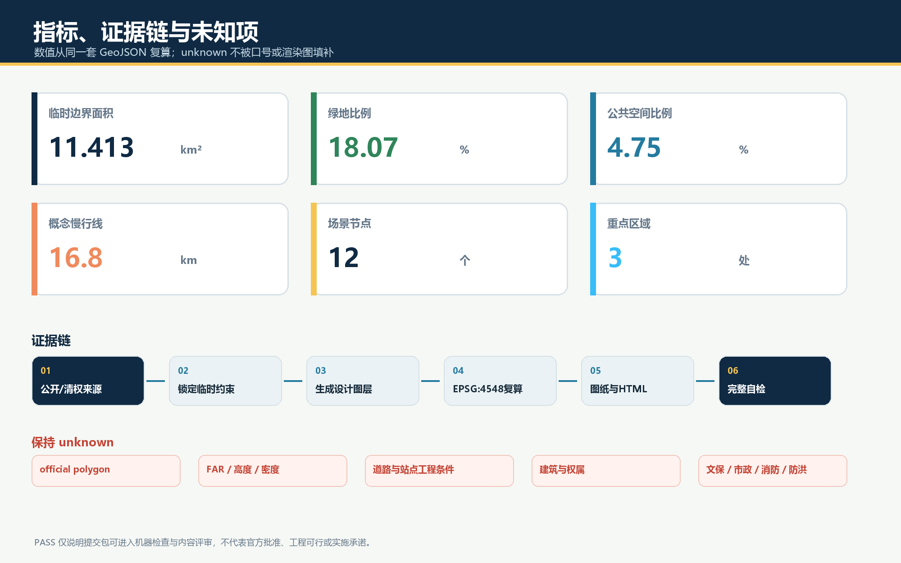

无门槛京张｜NO-APP JINGZHANG：不扫码也能使用的 AI 创新带
把‘无需手机、无需账号、无需人脸识别也能通行并获得基本服务’设为 AI 城市公共空间底线，以一条无门槛公共脊、三处接口实验室和十二个可人工接管场景，连接百年京张文化、AI 全栈创新与每个人的日常生活。
无门槛京张｜NO-APP JINGZHANG
AI 可以选择，城市始终可用。 本案所称“No-App”不是禁止 App，而是要求每项公共 AI 服务同时提供三种界面：不注册即可使用的公共界面、自愿开启的个性化界面、能够接管和申诉的人工界面。所有空间动作均为开放共创的概念建议或参考方案，可供专业团队深化研究，不替代正式规划，不构成政府审定、投资或实施承诺。
设计依据与资料清单
本案以官方公告确认的项目名称、三层工作范围、三处重点区约面积和设计任务为第一依据。来源 标准
面向智能体任务书用于确认三大定位、五大功能、三区两翼、六项任务和边界条款。来源 标准
城市设计方法遵循公共空间、历史文化、建筑体量与风貌统筹原则；涉及用地和实施时区分已知事实、概念建议和待确认条件，并采用仓库登记的用地分类代码。标准 标准 标准
“无门槛”有三组公共依据：国务院办公厅文件提出传统服务方式与智能化服务创新并行；无障碍环境建设法将自主安全通行、信息交流和社会服务纳入无障碍环境；个人信息保护法相关官方说明强调自动化决策的透明、公平和拒绝权。来源 来源 来源 数字界面将 WCAG 2.2 作为国际可访问性参照，但不把它宣称为本项目法定规划标准。来源
其中无障碍环境建设法已进入仓库批准的 formal 来源登记；适老智能技术实施方案仅作全国政策背景，不能证明本地落实。生成式 AI 服务如面向境内公众提供生成内容，才在《生成式人工智能服务管理暂行办法》的明确适用范围内；本案只把相关条文作为服务治理前置检查，不据此宣称任何场景已完成备案、安全评估或法律合规。来源 来源 来源
当前仓库仍缺 official SITE_BOUNDARY、三处 official KEY_AREA、道路红线、控规指标、现状建筑与权属、文保控制、市政管线、消防防洪和公共设施底数。来源 来源
本包沿用维护者明确标注的 provisional rough polygon，只用于概念生成、拓扑自检、内容评审和可视化，不是官方红线或精确面积依据。来源 空间数据 深度
三处重点区同样采用临时替代边界，仅用于表达概念关系。来源 空间数据 取得清权正式资料后，九组 GeoJSON、全部指标、五张图、两份 PDF 和网页必须整体复算。
建筑工程设计文件编制深度规定在本地标准索引中尚缺可核验官方正文，因此仅登记为待补资料，不把第三方镜像或本案图纸宣称为已满足该标准的权威成果。标准

三层范围工作框架
三层工作用同一条问题链贯通：谁会被数字门槛挡在外面，哪一种空间接口能消除门槛，哪一种产业测试能证明接口可靠，谁在故障时接管？ 统筹研究范围约 43.6 平方公里，负责把“无门槛 AI”转译为产业标准、人才与区域协同；总体设计范围约 11.4 平方公里，负责形成一条南北公共脊、六条东西缝合廊和十二个可达节点；三处重点区域约 368.4 公顷，分别验证研发端、社区端和消费商务端的接口。来源 深度
总体空间结构为 “一脊、三室、六桥、十二站”。一脊是沿京张遗址公园组织的无门槛公共服务与文化慢行脊；三室是众智园“互操作测试室”、AI 原点社区“共创学习室”、大钟寺“日常服务发布室”；六桥是方向性的东西步行、骑行和服务缝合关系，不代表新增道路或桥隧工程；十二站承载场景卡、人工帮助、纸质信息、静态导视与自愿数字增强。空间数据 空间数据 指标
上述空间关系对应本包的总体空间结构设计深度。深度

| 层级 | 核心判断 | 可读成果 | 待补资料 |
|---|---|---|---|
| 统筹研究 | 无门槛接口可以成为 AI 产品进入公共空间前的共同测试语言 | 六个国际案例、生态机制、品牌与年度活动 | 产业主体底数、政策与运营授权 |
| 总体设计 | 先保证连续通行和非数字服务，再叠加可选 AI | 用地、建筑、道路、绿地、公共空间、分期与指标 | official polygon、道路、设施与现状底图 |
| 重点区域 | 研发、社区、商业三种环境需要不同的验证门槛 | 三室详细策略、四项产业测试、十二个场景 | 地块权属、建筑测绘、站点和工程条件 |
统筹研究范围产业与未来城市研究
品牌与三区两翼协同
主名称为“无门槛京张”，英文名为 “NO-APP JINGZHANG”，传播句为 “AI is optional. The city remains available.” 主标由两条不闭合轨线、一个人的圆点和一段开放缺口构成：轨线对应百年京张与南北公共脊，圆点表示人的最终判断，缺口表示无需账号即可进入。辅助图形只截取开放轨线，不单独替代主标；活动品牌采用“NO-APP OPEN DAY + 年份”；三室、十二站与四个荣誉节点均在主标下使用名称锁定，不另造独立 Logo。
| 品牌应用 | 构成与安全区 | 最小建议尺寸 | 使用边界 |
|---|---|---|---|
| 主标 | 开放双轨 + 人点 + 中英名称；安全区为人点直径 1 倍 | 印刷宽 24 mm；屏幕宽 120 px | 小于该尺寸改用无文字符号，不压缩开放缺口 |
| 三室锁定 | 主标 + 众智园/原点/大钟寺名称 | 印刷宽 32 mm；屏幕宽 160 px | 实验室名称不能脱离主品牌独立背书 |
| 十二站编号 | 开放轨线 + S01–S12 + L0 人工帮助标识 | 印刷高 18 mm | 静态导视必须先于二维码和动态屏可见 |
| 荣誉节点 | 主标 + 节点名 + 贡献/失败记录年份 | 印刷宽 40 mm | 不使用人物肖像和企业商标替代公共荣誉 |
主色为京张深蓝 #102A43，公共界面蓝 #247BA0、生态绿 #2F855A、提醒黄 #F6C453 为功能色，警示红只用于风险与退出。字体使用系统回退栈，不随包分发第三方字体文件；所有底色组合须复核对比度，黑白打印仍以线型、编号和文字保持辨识。完整规则和双语应用见 visual/assets/brand-system.json 与品牌图。来源

三大定位在本案中分别落为“可读的百年京张文化带、可自由进入的都市 AI 生活体验带、可受控验证的 AI 融合创新带”；五大功能转译为自主技术的互操作测试、创新生态的公共接口、AI+ 场景的非强制入口、基本服务不断线的活力城市、以知情同意与人工复核参与 AI 治理。三区两翼形成闭环：众智园验证技术，原点社区与真实用户共同定义问题，大钟寺把成熟服务放进高频日常；中关村科技服务翼提供标准、法务、融资与国际连接，小月河场景赋能翼承担慢行、生态和生活场景反馈。来源
区域协同：五类接口而非空间扩张
区域协同只提出可讨论的合作接口，不假定任何外部主体已经承诺。北纬社区承担居民问题征集与日常服务共测；未来科学城对接科研人才、课程和算力需求；怀柔科学城对接科研成果解释与科学传播；经开区对接机器人、终端和制造验证；京津冀伙伴面向跨区域人才、供应链、测试互认讨论和年度公开活动。京张三室不替代这些区域，而是提供一套“无门槛服务护照”作为共同交付格式。来源
| 协同对象 | 人才/技术 | 算力/测试 | 转化/活动 | 可核验交付与边界 |
|---|---|---|---|---|
| 北纬社区 | 居民、银龄、亲子与一线人员共同定义问题 | L0 走查、信息可达与人工接管共测 | 社区问题日与结果回访 | 参与记录、问题清单、关闭回执；需社区同意 |
| 未来科学城 | 研究人员、学生和创业团队短期驻地 | 模型/算力需求分级，不传输未授权个人数据 | 课程、人才接力、原型说明 | 数据字典、算力用途、导师记录；不构成资源承诺 |
| 怀柔科学城 | 科研成果解释、科学传播和可信说明 | 研究原型在公开场景前完成可解释性检查 | 公共科学周与多语内容 | 来源卡、误差卡、撤回记录；不替代科研审查 |
| 经开区 | 机器人、终端、维修与制造团队 | 园内封闭验证后才申请真实街区测试 | 样机—场景—运维转化 | 测试报告、BOM、维护与退役责任；不代表准入 |
| 京津冀伙伴 | 跨区域人才与供应链目录 | 讨论互操作测试用例和事件分级 | 年度开放挑战与成果互访 | 版本化测试用例、公开摘要；互认须另行协商 |

六个全球案例与可转化机制
| 案例 | 可借鉴机制 | 京张转译 | 使用边界 |
|---|---|---|---|
| 新加坡 one-north | 工作、生活、学习与社区活动共置，产业平台连接多类创新主体 | 众智园由封闭研发园转向“测试—解释—交流”三层界面 | 仅作背景比较，不证明本地规模或绩效 来源 |
| 剑桥 Kendall Square | 创新区通过混合功能、地面公共性和社区连接减轻园区孤岛 | 六条东西缝合关系优先连接社区、轨道与创新空间 | 不直接移植其开发强度 来源 |
| 巴黎 STATION F | 在历史工业建筑中以多项目、多导师和共享服务降低创业摩擦 | 原点社区设置一站式“无账号初访”服务与分级深度服务 | 不引用其投资与企业数量作本地预测 来源 |
| 赫尔辛基 Smart Kalasatama | 居民、企业和研究者在真实街区共同设计并小步试验 | 十二站采用限期试点、公开反馈、人工接管和退出复原 | 不把海外试点等同本地许可 来源 |
| 多伦多 Quayside | 公共空间、无障碍审查、公众参与与数字治理同步推进 | 公共界面先通过无障碍和知情说明，再进入个性化层 | 重点吸取治理教训，不复述旧项目承诺 来源 |
| 巴塞罗那 22@ | 产业更新与混合街区、公共空间和城市服务协同 | 大钟寺将智能原生业态与全天候日常服务、街道公共性结合 | 不作为本项目用地审批依据 来源 |
由此形成“问题公开—共创原型—受控测试—无障碍挑战—公众试用—人工复核—开放发布”的七门创新链。土地与空间提供可变测试载体；产业、资本和法务只提供可选择的专业支持；端侧算力、最少数据和互操作接口降低单一平台锁定；公众能够旁观、拒绝、反馈和申诉。它不是传统园区贴上 AI 标签，而是把“公共可用性”变成产品研发和企业成长的真实约束。深度
总体设计范围城市更新与控规深度城市设计
总体设计不先规定一个单一的“智慧城市平台”，而是先建立三层公共界面：L0 基本层无需设备和注册，包括连续路径、实体导视、现金或多介质提示、固定求助点和现场人员；L1 自愿增强层允许用户主动扫码、刷卡、语音或使用 App 获取个性化信息；L2 专业受控层服务研发测试和运营管理，必须有边界、期限、责任主体和日志。L1、L2 不得侵占 L0 的面积、可见性和预算底线。
用地分区以项目枚举为语义，把完整 provisional boundary 拆分为科研、居住、商业服务、文化和公园绿地等概念分区；每个多边形共享切割线、无缝覆盖且不重叠。空间数据 指标 深度 这些分区说明功能关系，不是已批用地。中央绿地与开敞空间形成 L0 公共脊，两侧首层和更新节点承载 L1/L2；开发强度、容积率、建筑高度、密度与退线保持 unknown，待正式控规和专业论证。指标 深度
建筑策略只表达原型，不对具体权属建筑作拆改结论：靠近公共脊的建筑首层宜形成双入口、可穿行灰空间、实体信息墙和人工服务台；研发侧设置可关闭的测试庭；社区侧设置安静、遮阴、无障碍休息和非数字预约点；商业侧避免把入店、支付和优惠绑定到单一账户。生成的建筑基底仅是概念载体，其面积见 指标，必须在现状测绘后重做。空间数据 深度
重点区域详细设计
三处重点区边界均是临时矩形，只表达南北顺序和约面积；图面将其画为淡色虚线，不能解释为地块、道路或权属界线。来源 指标 深度

众智园：无门槛互操作测试室
众智园概念定位为花园型全栈创新与公共接口测试区。空间由封闭研发核、可预约验证庭、可旁观解释廊和全天公共绿地四级渐变组成；模型、机器人、终端和公共信息系统进入真实环境前，先通过断网降级、多模态输出、人工急停、身份最小化和跨厂商互操作测试。清河界面、五环交通和现状条件缺资料，因此只提出方向性绿廊、慢行接驳和场景庭，不给工程线位。空间数据
北京 AI 原点社区：无门槛共创学习室
原点社区概念定位为近校型创新与终身学习社区。以“第一次来不用注册”为设计尺度：公共发布、开放课程、成果解释、人才咨询和社区意见可直接进入；深度孵化、实验资源和专业服务再按需要分级授权。空间建议以既有建筑低扰动适配为优先，设置学生、居民、创业者、银龄用户和一线服务人员共同测试的“界面诊所”。校区园区连接、站口和建筑状态仍须测绘与权属核查。空间数据
大钟寺：无门槛日常服务发布室
大钟寺概念定位为城市型智能经济与日常消费试用区。四象限步行连通作为专业交通深化议题，本案只在现有 public-space 概念节点组织清晰过街信息、非机动车停放引导、人工问询和不依赖手机的活动发布。智能体、智能终端与内容消费在这里接受高峰、夜间、多语言、老年和无障碍用户的真实挑战；任何个性化营销必须有非个性化选项。空间数据
四处 AI 朝圣与荣誉节点为概念组件：北端“开源信号塔”展示可复用成果及失败记录；原点“第一行代码广场”以可更新地面刻度记录公开贡献；中段“人工接管亭”表彰维护、客服、志愿与安全人员；南端“百年—下一站”把京张工程史、中关村创新史和未来问题排成时间站台。它们采用可替换展陈、无肖像依赖和多模态说明，待文保、绿地和安全边界确认后深化。
AI 创新生态、人才画像与 AI+ 场景
六类人群共同构成“无门槛”测试基线：研发者需要可控测试和失败复盘；创业团队需要低成本初访与跨专业转接；学生和青年需要学习、展示与夜间安全；社区居民和亲子家庭需要低刺激、可拒绝的日常服务；银龄与残障用户需要实体信息、多模态交互和人工帮助；一线运营维护者需要可接管、可维修、可断网和可退役的工具。任何场景若只对熟练智能手机用户有效，就不算通过。来源
| # | 场景卡与空间 | 服务对象 / L0 基本界面 | 可选 AI 与数据边界 | 人工复核 / 退出 |
|---|---|---|---|---|
| 01 | 京张无账号导览 / 公共脊 | 所有人；实体总图、颜色与触觉标识 | 自愿语音或扫码；不建游客轨迹 | 文史编辑校核，随时转人工 |
| 02 | 慢行友好路线 / 六桥 | 行人、骑行者、轮椅与推车；固定方向和休息点 | 自愿输入目的地，不做人脸识别 | 交通专业人员复核，静态导视常在 |
| 03 | 多语公共发布 / 三室 | 访客与国际人才；中英要点和现场服务 | 自愿语音翻译；不保存原声 | 双语人员抽查，错误即撤回机器译文 |
| 04 | 人才服务接力 / 原点 | 学生、创业者；纸质清单与人工初诊 | 自愿生成办事清单，不自动作资格决定 | 专员确认，保留线下路径 |
| 05★ | 机器人礼让测试 / 众智园 | 行人优先；物理边界、急停与安全员 | 只记录设备状态和去标识事件 | 安全员接管，超限停止测试 |
| 06★ | 公共 AI 互操作测试 / 众智园 | 无账号访客；统一说明与服务编号 | 测试跨厂商转接，不建立统一个人画像 | 独立记录失败，人工转接可用 |
| 07★ | 断网与降级测试 / 众智园 | 基本照明、导视、广播不依赖云端 | 端侧推理只处理最少字段 | 断网演练，纸质台账和巡查接管 |
| 08★ | 无障碍信息挑战 / 原点 | 银龄、视听和认知差异用户共同验收 | 测试语音、大字、触觉与简洁交互 | 使用者否决权，修复后再测 |
| 09 | 社区健康导航 / 原点 | 只提供公开服务信息与人工问询 | 不做诊断；自愿整理就医问题 | 医务或社工确认，紧急情况走既有渠道 |
| 10 | 智能原生消费试用 / 大钟寺 | 现金、多介质与明码信息可见 | 个性化推荐须可关闭，不做差别定价 | 店员解释与退款路径清楚 |
| 11 | 京张记忆声景 / 公共脊 | 文字、图形和可触摸时间线 | 自愿听取公开史料生成的多语讲解 | 史料来源公开，错误可更正 |
| 12 | NO-APP 城市开放日 / 全带 | 不预约也可进入公共展区 | 自愿领取个性化路线 | 现场总台、纸质日程和失物服务常在 |
四个★为产业测试验证场景，均采用“测试目标—边界—失败阈值—人工接管—公开摘要—到期退出”六字段服务护照。场景在 public_space.geojson 中与十二个节点对应，空间数据；它们是概念性测试建议，不是已批准运营。来源
真实使用者共测与证据回执
共测不是一次问卷，而是“任务走查—异常演练—修复复测—公开回执”四步闭环。每轮至少覆盖银龄/低数字技能者、残障与认知差异使用者、周边居民和亲子、学生青年、一线客服/安保/维护人员五组角色；招募、合理便利、影像记录和数据字段须单独取得知情同意，拒绝参与不影响任何基本服务。首轮只测试纸面和可移动原型，第二轮测试受控现场，第三轮才讨论限期公众试用。无障碍使用者和一线维护者对未关闭的严重障碍拥有否决权；专业人员分别对无障碍、隐私与数据、交通、景观/文保、结构、消防和工程安全作最终判断。来源
每项测试产生五份回执：参与构成（只报汇总）、关键任务完成率、失败与人工接管记录、修复前后对照、仍未关闭问题与责任人。原始个人数据不进入公开仓库；公开摘要只保留去标识统计和可复现问题。详细计划见 visual/assets/user-cotest-plan.json，双语等义检查见 visual/assets/bilingual-equivalence-audit.json。
用地、建筑规模与拆改留方案
概念用地由完整边界切分而来，中央 1401 公园绿地承担南北公共脊，其余分区以 0802 科研、0803 文化、07 居住、05 商业服务等法定分类子集表达主导功能。空间数据 这套分区只回答“什么功能邻接有利于无门槛服务”，不回答法定用地调整。用地面积、比例和边界必须在 official polygon 与控规条件到位后复算。标准
拆改留采用“先查再定”的四级调查框架：具有历史、使用和结构价值者优先保留；能够用首层开口、无障碍、电梯、遮阴和设备带改善者优先微更新；只有在安全、权属、结构和公共利益论证后才研究较大改造；新建仅作为补齐公共服务或产业接口的最后选项。当前 空间数据 只是十二组空间原型，不对应真实建筑，不能据此宣布任何具体保留、改造或拆除。深度
建筑风貌用“轨道秩序、开放首层、克制媒体、可维护构件”四条概念导则控制：沿公共脊保持连续可读的檐下空间；测试设备集中到可替换设备带；数字屏不能遮挡实体导视、历史界面和无障碍路径；夜间照明优先安全、低眩光和生态影响。高度与体量只提出从公共空间日照、天际线、历史环境和街道尺度出发的专业研究议题，不给数值结论。标准
交通、轨道、市政与公共服务设施
交通结构由一条南北慢行绿脊和六条方向性的东西缝合廊组成，空间数据 的 指标 仅复算本案概念线，不是道路红线或工程里程。每条廊道先解决连续、遮阴、休息、过街信息、轮椅和推车可达，再研究自行车、轨道接驳、路缘和停车。大钟寺、五道口、清华东路西口等站点相关内容须以正式站区和交通资料深化。深度
市政与新型基础设施遵循“基本设施先于智能设备”：供电、通信、排水、消防与应急保障条件未核实前，不计算容量或布置管线；端侧算力、传感、充换电和数字标识只提出共沟、可计量、可关断、可维修、可退役的接口清单。每个智能组件公开服务范围、采集字段、保存期限、维护者、断网行为和人工替代。公共厕所、饮水、座椅、照明、广播与求助不得因数字化而减少。空间数据 深度

蓝绿空间、公共空间与城市风貌
中央蓝绿公共脊将京张遗址公园从“展示背景”转成日常公共接口：连续通行面承担 L0，树荫与安静花园承载停留，十二个场景节点承载可选择的 L1/L2。green_space.geojson 与 public_space.geojson 分别计算绿地和公共空间，不把 provisional boundary 视觉化为正式红线。空间数据 指标 指标
这一组内容对应蓝绿与公共空间设计深度。深度
公共空间组件库包括：无需手机即可读的服务护照牌、纸质地图槽、触觉与高对比导视、可移动遮阴和座椅、人工帮助按钮、低位服务台、设备物理关闭位、失败记录墙和可替换荣誉模块。组件先进行使用者共测，再由景观、无障碍、文保、结构、消防和运维专业团队深化；涉及清河、小月河和京张遗址的任何施工必须等待相应控制资料。
文化叙事不是“铁路外形加电子屏”，而是三条可读时间线：京张铁路代表自主工程与公共连接，中关村代表知识转化与开放协作，AI 新文化代表模型也要解释、失败也要记录、服务可以拒绝。导视以轨枕节奏组织编号，以开放缺口区分公共入口，以人的圆点标记人工帮助；整体 Logo 和历史文化标识保持层级区别。
更新项目清单、实施政策与分期计划
| 项目包 | 概念内容 | 进入深化前置条件 | 退出或回退方式 |
|---|---|---|---|
| P1 无门槛基线普查 | 门到门步行、无障碍、实体信息、人工服务与数字依赖审计 | official 边界、道路与设施底图；使用者参与 | 形成公开问题清单，不先建设 |
| P2 一脊六桥示范段 | 连续导视、休息点、纸质地图、遮阴和公共服务接口 | 文保、交通、绿地、消防与运维审查 | 采用可移动组件，不合适即撤除 |
| P3 三室四项测试 | 互操作、断网、机器人礼让、无障碍信息挑战 | 场地主体同意、伦理与安全方案、责任人 | 限期、急停、人工接管、公开失败 |
| P4 十二站公共网络 | 场景节点与人工接力服务 | 服务底数、运营预算、人员培训 | L1/L2 可下线，L0 保持 |
| P5 文化与荣誉系统 | 四个地标、贡献档案、失败记录与年度展陈 | 史料、版权、文保和公众复核 | 模块化更换，不绑定单一企业 |
| P6 开放运营协议 | 服务护照、场景征集、评价、申诉与退役 | 法务、数据、采购与审计专业设计 | 到期复审，不默认续期 |
P1–P6 责任、成本和采购协议
责任链采用 RACI：项目治理组对范围、预算和退出负责（A）；城市设计/工程、无障碍、数据与安全、运营团队分别执行其专业审查（R）；居民代表、场地权利人、交通/文保/消防等主管专业和采购审计人员按事项会商（C）；公众获得范围、风险、结果和退役状态的公开告知（I）。任何单一技术供应商不得同时承担测试执行、结果验收和争议裁决。
| 项目包 | 建议成本级 | 采购/资金假设 | 启动证据 | 运营与退出 |
|---|---|---|---|---|
| P1 | C1 研究与走查 | 规划研究/公共参与服务，先形成独立问题底册 | 调查范围、样本策略、隐私说明 | 半年复核；底册可持续开放 |
| P2 | C2 可移动示范 | 小额分包或样品采购，构件可拆卸、可维修 | 专业会审、试装和维护清单 | 月巡检；连续两期未修复则撤除 |
| P3 | C2–C3 受控测试 | 场地主体+测试方分担；安全与保险独立列项 | 伦理/安全计划、测试脚本、急停演练 | 每次测试复盘；重大事件立即终止 |
| P4 | C3 服务网络 | 运营经费先于设备采购，保留人工岗位 | 服务目录、排班、SLA、培训与备件 | 季度复评；预算不足先下线 L1/L2 |
| P5 | C2 内容与模块 | 内容、版权、构件分包，禁止品牌独占 | 史料与权利审核、样件共测 | 年度更新；争议内容先撤下 |
| P6 | C1 治理与审计 | 法务、采购、数据和第三方审计服务 | 责任矩阵、日志字段、申诉与退役模板 | 年度公开报告；不得自动续约 |
C1、C2、C3 仅是比较级概念成本（研究/轻量样机/持续运营或高安全要求），不对应投资额；正式估算须有工程量、市场询价、税费、运维年限和风险准备。采购前审查接口开放性、数据可携带、维护权和退出成本；验收方复核 L0 是否独立可用，审计方抽查日志、分包、利益冲突和问题关闭。资金来源、招标方式与采购限额均未确定。
四项测试的建议验收阈值
| 测试 | 建议试点阈值（须在专业预审后校准） | 人工接管与公开摘要 | 复评/退出 |
|---|---|---|---|
| 机器人礼让 | 重大人身/碰撞事件为 0；物理急停每班前 100% 自检；弱势使用者参与的关键路径不得有未关闭严重障碍 | 现场安全员持续可见，局部急停链路仪器验证目标 ≤1 秒 | 任一重大事件立即停测；关闭根因并经独立安全复核后才可重启 |
| 公共 AI 互操作 | 预先定义的无账号转接用例通过率建议 ≥95%；跨厂商不传递原始身份字段 | 人工转接 60 秒内确认；公开失败类型、版本与修复状态 | 连续两轮低于阈值或出现无法导出的锁定即退出该接口 |
| 断网与降级 | L0 照明、导视、求助与通行 100% 保持；断网状态 5 分钟内张贴/播报 | 巡查与纸质台账立即接管；公开中断时长和受影响服务 | 恢复后 24 小时内复盘；基本服务失效则 L1/L2 不得恢复 |
| 无障碍信息挑战 | 关键任务建议 ≥90% 独立完成且 100% 有人工替代；严重障碍为 0 | 人工帮助 60 秒内回应；公开各类用户的去标识失败主题 | 使用者否决未关闭严重问题；修复后以同任务复测 |
以上数值是为了让概念进入可测试状态的建议试点门槛，不是法定标准、性能保证或现状结论。SLA 分信息服务（60 秒确认）、设备故障（现场隔离并即时标识）、一般维护（24 小时内登记处置计划）三级；每季复评范围、使用者负担、能耗/算力、维护工时和供应商锁定风险。完整机器可读协议见 visual/assets/implementation-operation-contract.json。

分期 GeoJSON 将 provisional boundary 划为三个可复算概念阶段：空间数据 指标。第一期建议先做无门槛基线、导视和四项低风险测试；第二期在三室扩展公共服务与首层微更新；第三期依据评估再研究空间载体深化和国际运营。分期不是确定开发时序，不含投资额、征拆和审批判断。深度 深度
政策机制建议包括：公共 AI 服务采购前增加“No-App 基线”验收；每个场景提交服务护照和退役清单；无障碍使用者与一线维护人员拥有测试否决权；个人化服务不得减少非个人化选项；场景数据最少化并设人工申诉；失败结果与修复也进入贡献荣誉体系。年度活动形成“春季问题征集—夏季原型共创—秋季街区挑战—冬季公开复盘”的概念节奏，并配置开发者驻地、公众体验路线、国际案例互访与项目转化门，不把活动写成已经确定的政府安排。来源
指标体系、面积复算与合规矩阵
指标分三类：可复算几何指标来自 EPSG:4548 下的包内 GeoJSON；任务完成度指标来自场景、人物、案例和矩阵；法定与工程指标因资料缺失保持 unknown。
边界、建筑基底和绿地的核心可复算项为 指标、指标 与 指标。
公共空间、概念路网和用地分区的核心可复算项为 指标、指标 与 指标。
重点区、场景节点和分期的核心可复算项为 指标、指标 与 指标。其中 site area 只是对临时边界的包内复算，不能替代公告约面积或 official polygon。深度

compliance_matrix.json 覆盖公告 1.3、1.4、1.5 的 17 条必选任务与 agent.1-agent.6，逐条映射正文、GeoJSON、指标、A3/A0、HTML、来源、假设和自检。standard_matrix.json 回答专业依据，design_depth_matrix.json 回答成果深度；三者不把缺失控规写成已完成法定规划，而是证明本案在已知资料条件下提供了可读设计、可复算图层和明确待确认清单。
风险、版权与合规说明
最大风险不是“AI 不够多”，而是数字入口替代城市入口。为此设六条红线：基本通行不依赖账号；基本公共信息不依赖智能手机；不以人脸识别作为普通公共空间使用前提；自动化提示不直接作出对个人权益有重大影响的决定；每项关键服务有人工接管与申诉；智能设备下线后，照明、导视、求助和通行仍可工作。来源 来源
空间风险同样明确：边界和重点区为 provisional；控规、道路、建筑、权属、文保、市政和设施底数未齐；建筑和节点均为概念原型；绿地、公共空间与交通线不构成工程方案。空间数据 每次取得新资料后按“登记来源—校核坐标—替换约束—重生成设计层—复算指标—更新图纸网页—完整自检”处理。深度
权利证据按资产逐项登记在 visual/assets/rights-clearance-ledger.json：原创正文与英译、九组概念 GeoJSON、八组中英图件、四份 PDF、两组离线 HTML、品牌几何和结构化 JSON 分别记录作者/生成者、来源基础、第三方依赖、许可范围、核验方法和未决限制。HTML 不含远程脚本、字体、地图瓦片或追踪；图件不含案例网页图片、企业商标、人物肖像或第三方图纸；PDF 只嵌入包内图形和构建环境字体，不随包再分发字体文件。生成工具链为 OpenAI Codex、Python、Pillow 和 ReportLab；工具本身保持各自许可，CC-BY-SA-4.0 只覆盖投稿者有权许可的原创成果，不覆盖官方文本、标准、案例网页、字体软件或第三方工具。
来源也按证据角色纠偏：仓库登记为 formal 的官方来源只在明确允许用途内支撑判断；适老政策为 background_only；尚未进入批准登记的个人信息说明、WCAG 2.2 和国际案例一律为背景参照，不承担本地法定控制或合规证明。无法由包内材料核验的权利不写成“已清权”，而标记为“仅引用、不再分发”或“待权利人/专业人员确认”。完整声明见 report/copyright_statement.md。来源
中英文稿已按章节、主张、数字、单位、证据标记、图位、来源角色和 provisional 警示逐项对照；记录明确由 AI 辅助完成，未冒充独立人类翻译证明。最终出版前仍需作者/专业双语人员签署最后复核。最终规划、工程、无障碍、隐私、消防、文保和安全判断均由相应人类与专业团队作出。
参考资料
项目主控资料包括官方公告、面向智能体任务书和本地专业标准快照。来源 来源 来源
资料状态与处理事实以 source registry 和 processed fact pack 为准。来源 来源
空间替代数据为明确限制用途的 provisional boundary。来源 来源
无门槛设计依据包括国务院办公厅适老智能技术实施方案、无障碍环境建设法和个人信息保护法相关官方说明。来源 来源 来源
WCAG 2.2 作为国际可访问性参照。来源
国际比较首先覆盖 one-north、Kendall Square 与 STATION F。来源 来源 来源
对照组同时包括 Smart Kalasatama、Quayside 与 Barcelona 22@；全部案例只支撑机制借鉴，不支撑北京本地边界、容量、投资或成效结论。来源 来源 来源